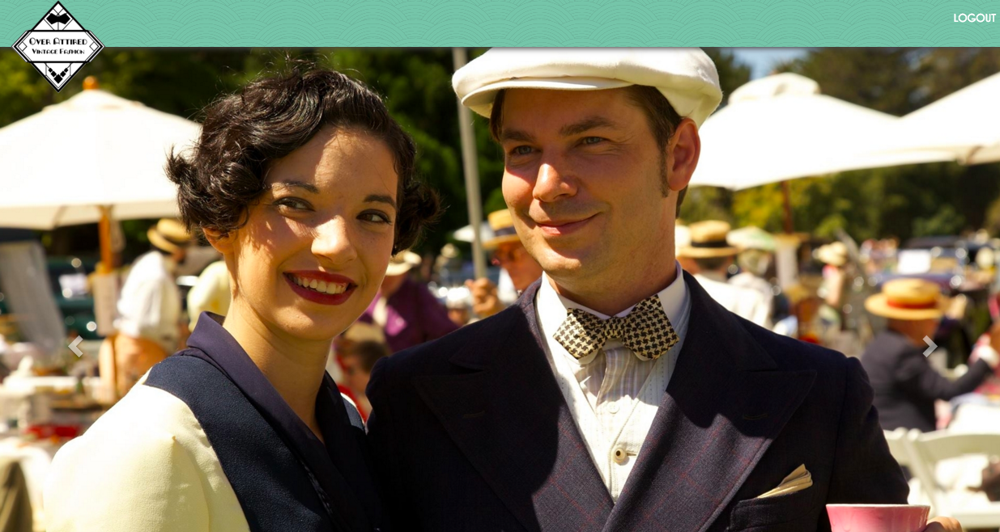
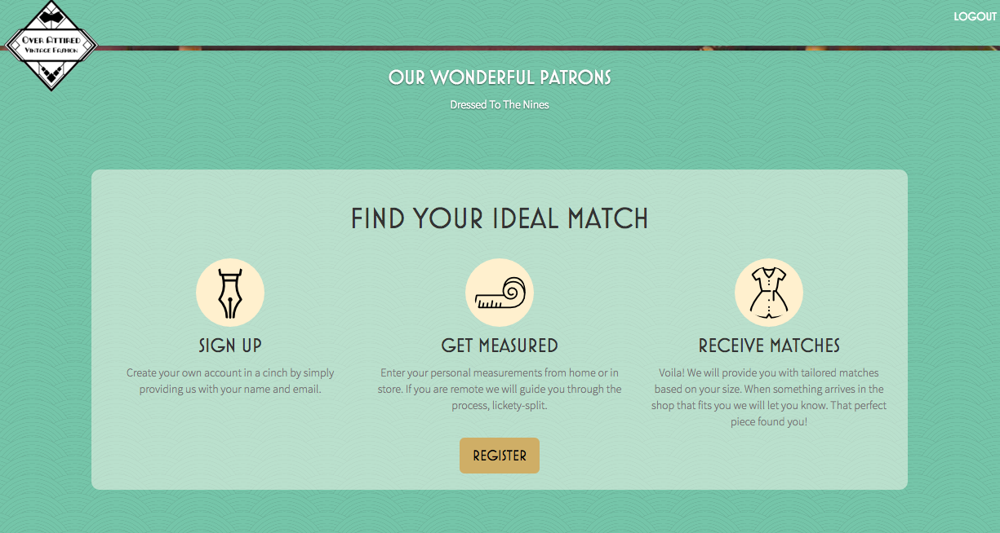
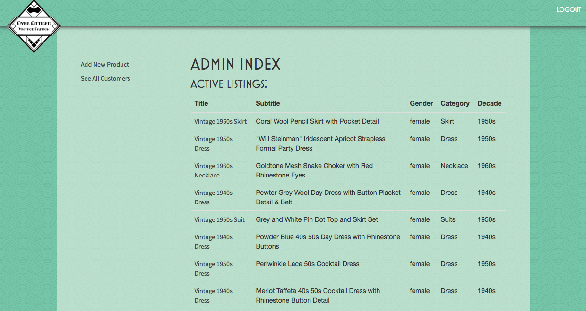
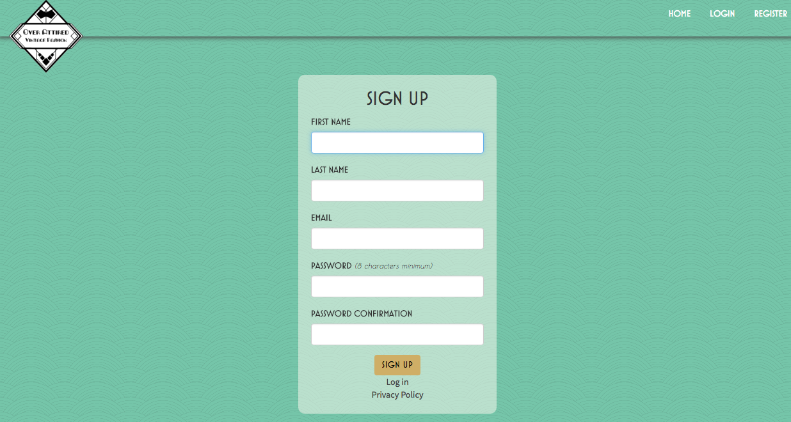
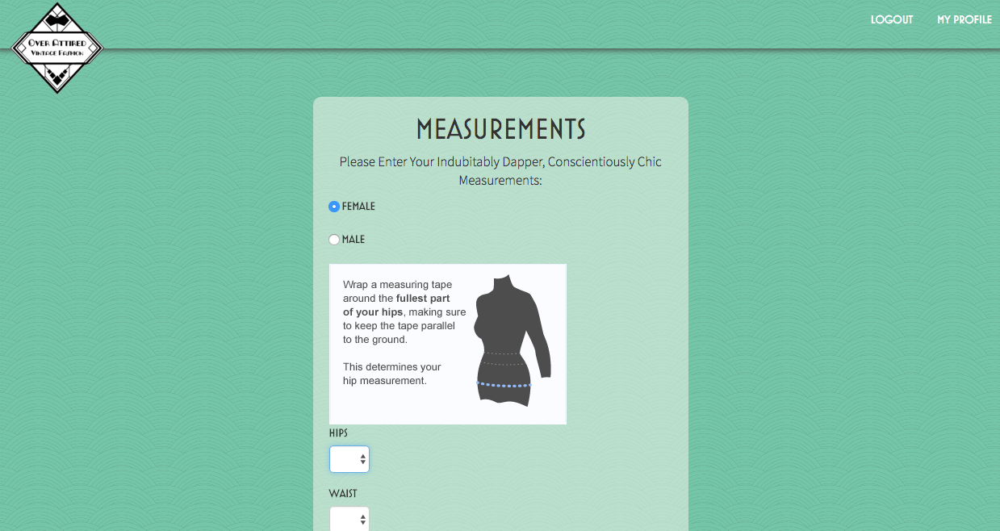

OVERATTIRED
About:
For our final project at DevBootcamp, a local vintage store based in Oakland called OverAttired approached my team (Hanah, Lindsey, Ovi, and I) to implement his vision of creating a web app that brings technology to the vintage world. After visiting his store and learning more about his needs, we spent the next week and a half building out the OverAttired app.
The problem the store wanted us to address is in the vintage clothing world, every piece of clothing is unique and its sizing is based on exact measurements rather than modern categorizations. Being aware of new store items that also fits you can be a frustrating experience for OverAttired's customers, because they have to constantly return back to their store to discover new pieces.
My main role was to implement background processes in the application. To make the application a seamless experience for both the store owners and customers, we wanted users to receive a welcome email upon signing up that listed all the existing store products that fit his or her measurements.
At the same time, because the store owners upload each of their items on etsy, we wanted the web app to scrape etsy everyday at 9 AM for new store products and send users a list of items whenever new items are in store that fits them.
Stack:
Ruby on Rails
Etsy API
Redis & Sidekiq
Bootstrap
jQuery
Links:
Screenshots:
    